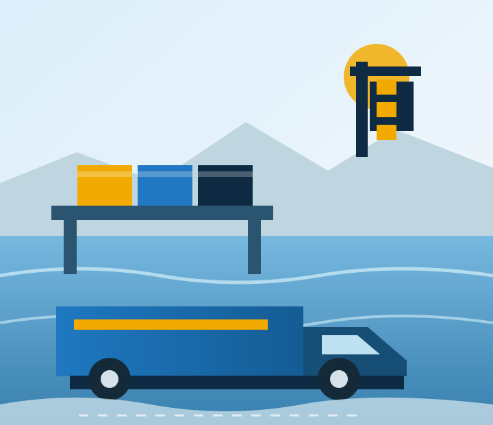

Pengiriman Darat
Distribusi antarkota yang fleksibel dengan armada sesuai kebutuhan muatan Anda.
Pelajari layananKami hadir untuk memastikan setiap pengiriman tiba dengan aman, tepat waktu, dan tanpa kerumitan.
Mitra yang tumbuh bersama
Dipercaya bisnis di berbagai sektor

Dari pengiriman lokal hingga distribusi antarpulau, kami siap menjaga rantai pasok Anda terus bergerak.
Distribusi antarkota yang fleksibel dengan armada sesuai kebutuhan muatan Anda.
Pelajari layananJangkauan antarpulau dengan pilihan muatan kontainer maupun kargo konsolidasi.
Pelajari layananSolusi cepat untuk kiriman prioritas dan barang yang membutuhkan penanganan khusus.
Pelajari layananPenyimpanan dan pengelolaan stok yang rapi untuk mendukung kelancaran operasional.
Pelajari layanan
Kami memahami bahwa setiap kiriman membawa kepercayaan. Karena itu, setiap proses kami jalankan dengan penuh tanggung jawab.
Kami membuat proses pengiriman lebih sederhana agar Anda bisa fokus menjalankan bisnis.
Ceritakan kebutuhan, jenis barang, dan tujuan pengiriman Anda.
Tim kami membantu memilih rute dan layanan paling sesuai.
Barang dijemput, disiapkan, dan dikirim dengan aman.
Kiriman sampai, Anda mendapat informasi status pengiriman.
Menjadi bagian dari perjalanan bisnis
Diskusikan kebutuhan logistik Anda dengan tim kami.